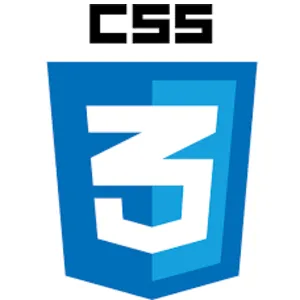

Bienvenido (a) a mi portafolio!!!
Mi nombre es Jesús Benjamín Zerpa economista y científico de datos con amplia experiencia en finanzas, planificación y presupuesto. Desarrollé esta página para compartir un resumen de mi praxis y experticia profesional específicamente con gestión de data financiera en diversas áreas estratégicas. Además, la participación que tuve en algunos proyectos. Encontrarás: códigos en lenguaje R y Python, pruebas de paqueterías de R, tratamiento y modelaje de datos; training en Business Intelligence, Portafolios, Big Data, Machine Learning, Neural Network, Time Series, Forecast, Dashboard Financiero y Evaluación de Proyectos.
Para completar, un archivo de prácticas con bases de datos que incluyen extracción, filtrado y manipulación de data. También hay conexiones con Rstudio, actualización de paqueterías y dashboards integrados. Pronósticos con bases de datos reales y comparación de técnicas. De igual modo, encontrarás referencias de trabajos de investigación, actualizaciones y expansiones.
Contenido de Portafolio:
1. Modelo de Pronósticos para Ventas en Volumen
 El área vital de todo negocio y base del presupuesto anual son las ventas, existen muchos métodos para realizar un pronóstico de ventas a partir de la experiencia y la observación del propio negocio, sin embargo, cuando combinamos esos métodos con la modelización estadística los resultados no solo mejoran, sino, que se ahorra tiempo y disminuye el margen de error.
El área vital de todo negocio y base del presupuesto anual son las ventas, existen muchos métodos para realizar un pronóstico de ventas a partir de la experiencia y la observación del propio negocio, sin embargo, cuando combinamos esos métodos con la modelización estadística los resultados no solo mejoran, sino, que se ahorra tiempo y disminuye el margen de error.
En el portafolio se encuentra una metodología para realizar un pronóstico de ventas en volumen a partir del histórico del negocio utilizando varios modelos estadísticos aplicando la paquetería de R TSstudio, generando gráficos interactivos que permiten una mejor manipulación que incluye una visualización de datos vanguardista. Seguir leyendo (...)
2. Modelización de la volatilidad y Valor en Riesgo (VaR) del Bitcoin

En este sentido, el Bitcoin se puede considerar una especie de activo de renta variable con una importante volatilidad y un atractivo rendimiento a largo plazo. El modelo Garch y sus variantes, son un instrumento estadístico que permite modelar esa volatilidad y tomar posición para decisiones de compra / venta. El Valor en riesgo VaR, evalúa el riesgo y la probabilidad de una pérdida en la decisión y respalda los tiempos de recuperación de la inversión. Seguir leyendo (...)
3. Aprendizaje Automático (Machine Learning)
 El Machine Learning se define como el sub-campo de la “Inteligencia Artificial” que se centra en el desarrollo de programas informáticos que tienen acceso a los datos y proporcionan al sistema la capacidad de aprender y mejorar automáticamente, de encontrar patrones en la base de datos sin ninguna intervención o acción humana basado en el tipo de datos, es decir, datos etiquetados o no etiquetados, el enfoque de capacitación del modelo en aprendizaje automático se ha clasificado como aprendizaje supervisado y no supervisado.
El Machine Learning se define como el sub-campo de la “Inteligencia Artificial” que se centra en el desarrollo de programas informáticos que tienen acceso a los datos y proporcionan al sistema la capacidad de aprender y mejorar automáticamente, de encontrar patrones en la base de datos sin ninguna intervención o acción humana basado en el tipo de datos, es decir, datos etiquetados o no etiquetados, el enfoque de capacitación del modelo en aprendizaje automático se ha clasificado como aprendizaje supervisado y no supervisado.
El Machine Learning permite realizar un tipo de pronóstico que se crea automáticamente a partir de patrones pasados que pueden repetirse en el futuro, a diferencia de los modelos estadísticos, el aprendizaje automático ajusta el pronóstico de manera autónoma, ofrece la posibilidad de realizar combinaciones de variables relacionadas al pronóstico y de un entrenamiento por fases.
En el lenguaje R se encuentran una series de paquetes dedicados a la investigación del Machine Learning, a la Big data y a Redes Neuronales lo que permite a los innovadores de otras ciencias distintas a la informática, realizar prácticas y aplicaciones en sus campos de estudios particulares. Seguir leyendo (...)
4. Portafolio de Fronteras Eficientes Markowitz

Su idea central es que el inversor racional, buscará maximizar sus beneficios (retornos) asumiendo el menor riesgo (volatilidad) posible, esto se puede lograr con la diversificación de la cartera, eligiendo en principio, acciones que tengan una correlación baja o negativa. Por ejemplo, combinando acciones de empresas con distinta actividad económica.
Toda la teoría la aplicaremos con el paquete Portfolio que incluye la versión completa de fronteras eficientes y permite elaborar distintos tipos de portafolios descargando automáticamente los valores de los instrumentos que necesitemos, incluso criptomonedas. Seguir leyendo (...)
 La evaluación y formulación de proyectos de inversión es uno de los instrumentos prioritarios que deben acompañar todas las iniciativas de inversión para una toma de decisiones efectiva. Su contenido revela la información que de otra manera no es posible visualizar. Al final, su veredicto puede determinar si un proyecto es rentable o no. Su importancia radica en el trabajo multidisciplinario que genera donde economistas, contadores, ingenieros, administradores, etc, participan con el objeto de introducir una nueva iniciativa de inversión y mejorar sus posibilidades de éxito.
La evaluación y formulación de proyectos de inversión es uno de los instrumentos prioritarios que deben acompañar todas las iniciativas de inversión para una toma de decisiones efectiva. Su contenido revela la información que de otra manera no es posible visualizar. Al final, su veredicto puede determinar si un proyecto es rentable o no. Su importancia radica en el trabajo multidisciplinario que genera donde economistas, contadores, ingenieros, administradores, etc, participan con el objeto de introducir una nueva iniciativa de inversión y mejorar sus posibilidades de éxito.
 Un panel de control financiero (Financial Dashboard) es una herramienta de “inteligencia empresarial” que ayuda a rastrear todos los KPI financieros relevantes, permite una visión amplia y eficiente del negocio y facilita el seguimiento de los márgenes de ventas y ganancias en detalle para cumplir y superar los objetivos financieros proyectados de un área, línea de negocio, departamento, empresa o grupo de ellas.
Un panel de control financiero (Financial Dashboard) es una herramienta de “inteligencia empresarial” que ayuda a rastrear todos los KPI financieros relevantes, permite una visión amplia y eficiente del negocio y facilita el seguimiento de los márgenes de ventas y ganancias en detalle para cumplir y superar los objetivos financieros proyectados de un área, línea de negocio, departamento, empresa o grupo de ellas.
 El análisis del entorno macroeconómico y económico mundial se ha convertido en una puerta para la búsqueda de nuevos mercados emergentes. En el entrenamiento se visualizará el contenido del paquete Gapminder, en especial los datos globales de la esperanza de vida al nacer y el producto Interno Bruto per Cápita. Igualmente se elaborarán gráficos interactivos, de tendencia y dispersión. Por último, algunas pruebas lineales para determinar correlación y comentarios de las principales observaciones.
El análisis del entorno macroeconómico y económico mundial se ha convertido en una puerta para la búsqueda de nuevos mercados emergentes. En el entrenamiento se visualizará el contenido del paquete Gapminder, en especial los datos globales de la esperanza de vida al nacer y el producto Interno Bruto per Cápita. Igualmente se elaborarán gráficos interactivos, de tendencia y dispersión. Por último, algunas pruebas lineales para determinar correlación y comentarios de las principales observaciones.
La segunda parte del entrenamiento se hará con el paquete Quandl, una herramienta poderosa para descargar directamente información macroeconómica, en este caso de Venezuela, utilizando la plataforma del Banco Mundial y su base de datos llamada Indicadores del desarrollo mundial (WDI) "World Development Indicators". Seguir leyendo (...)

 En el siguiente entrenamiento se presenta una novedosa herramienta a los traders y especialistas en criptomonedas para hacer pronósticos.
En el siguiente entrenamiento se presenta una novedosa herramienta a los traders y especialistas en criptomonedas para hacer pronósticos.
En un mundo tan dinámico, una de las necesidades para estos profesionales es estar actualizados en las técnicas para el análisis de datos con posibilidades predictivas, muchas veces sin la rigurosidad técnica y teórica de los modelos robustos para este tipo de análisis que requieren de un vasto conocimiento en estadísticas o econometría como los modelos del catálogo “Arch-Garch” por ejemplo.
Hace algunos meses leí sobre el paquete Prophet creado por el equipo Core Data Science de Facebook y desarrollado en código abierto. El paquete está disponible para el entorno de desarrollo integrado de Rstudio y Python. En general, es rápido y proporciona pronósticos completamente automatizados para científicos y analistas de datos en solo unas cuántas líneas de código, lo que agiliza su aplicación. Seguir leyendo (...)

 Un software de Business Intelligence (BI) es una forma de software que ayuda a todo tipo de empresas a medir y mejorar la productividad.
Un software de Business Intelligence (BI) es una forma de software que ayuda a todo tipo de empresas a medir y mejorar la productividad.

"La ciencia será siempre una búsqueda, jamás un descubrimiento real. Es un viaje, nunca una llegada..."-Karl Popper
5. Evaluación y Formulación de Proyectos de Inversión
 La evaluación y formulación de proyectos de inversión es uno de los instrumentos prioritarios que deben acompañar todas las iniciativas de inversión para una toma de decisiones efectiva. Su contenido revela la información que de otra manera no es posible visualizar. Al final, su veredicto puede determinar si un proyecto es rentable o no. Su importancia radica en el trabajo multidisciplinario que genera donde economistas, contadores, ingenieros, administradores, etc, participan con el objeto de introducir una nueva iniciativa de inversión y mejorar sus posibilidades de éxito.
La evaluación y formulación de proyectos de inversión es uno de los instrumentos prioritarios que deben acompañar todas las iniciativas de inversión para una toma de decisiones efectiva. Su contenido revela la información que de otra manera no es posible visualizar. Al final, su veredicto puede determinar si un proyecto es rentable o no. Su importancia radica en el trabajo multidisciplinario que genera donde economistas, contadores, ingenieros, administradores, etc, participan con el objeto de introducir una nueva iniciativa de inversión y mejorar sus posibilidades de éxito.
En este sentido, se detalla mi participación en la evaluación y formulación de un proyecto de inversión denominado “Global Nutrition España 2017”, emprendido por un importante Grupo Empresarial venezolano del sector salud. Seguir leyendo (...)
6. Financial Dashboard

La herramienta la desarrollé en el 2018. En la primera versión, se diseñó para la presentación de resultados financieros de la V.P de Finanzas de un importante Grupo Empresarial, en cuya actividad económica se incluyen: Producción, distribución, venta al mayor, comercialización y una cadena de tiendas al detal. Seguir leyendo (...)
7. Exploración de Datos Macroeconómicos con Rstudio
 El análisis del entorno macroeconómico y económico mundial se ha convertido en una puerta para la búsqueda de nuevos mercados emergentes. En el entrenamiento se visualizará el contenido del paquete Gapminder, en especial los datos globales de la esperanza de vida al nacer y el producto Interno Bruto per Cápita. Igualmente se elaborarán gráficos interactivos, de tendencia y dispersión. Por último, algunas pruebas lineales para determinar correlación y comentarios de las principales observaciones.
El análisis del entorno macroeconómico y económico mundial se ha convertido en una puerta para la búsqueda de nuevos mercados emergentes. En el entrenamiento se visualizará el contenido del paquete Gapminder, en especial los datos globales de la esperanza de vida al nacer y el producto Interno Bruto per Cápita. Igualmente se elaborarán gráficos interactivos, de tendencia y dispersión. Por último, algunas pruebas lineales para determinar correlación y comentarios de las principales observaciones.La segunda parte del entrenamiento se hará con el paquete Quandl, una herramienta poderosa para descargar directamente información macroeconómica, en este caso de Venezuela, utilizando la plataforma del Banco Mundial y su base de datos llamada Indicadores del desarrollo mundial (WDI) "World Development Indicators". Seguir leyendo (...)
8. Sistema Integrado Geográfico SIG

El término geoespacial recientemente ha ganado popularidad y se utiliza para definir los datos colectivos y la tecnología asociada tiene un componente geográfico o de ubicación. Una búsqueda con Ngram Viewer de Google muestra que el término solo ingresó a la literatura a fines de la década de 1980 y ha aumentado rápidamente en frecuencia desde entonces.
La palabra geoespacial se usa para indicar los datos que tienen un componente geográfico. Esto significa que los registros en un conjunto de datos tienen información de ubicación vinculada a ellos, como datos geográficos en forma de coordenadas, dirección, ciudad o código postal. Los datos SIG son una forma de datos geoespaciales. Otros datos geoespaciales pueden originarse a partir de datos GPS, imágenes satelitales y geoetiquetado. Seguir leyendo (...)
9. Pronósticos con Prophet para el Bitcoin y Ether
 En el siguiente entrenamiento se presenta una novedosa herramienta a los traders y especialistas en criptomonedas para hacer pronósticos.
En el siguiente entrenamiento se presenta una novedosa herramienta a los traders y especialistas en criptomonedas para hacer pronósticos.En un mundo tan dinámico, una de las necesidades para estos profesionales es estar actualizados en las técnicas para el análisis de datos con posibilidades predictivas, muchas veces sin la rigurosidad técnica y teórica de los modelos robustos para este tipo de análisis que requieren de un vasto conocimiento en estadísticas o econometría como los modelos del catálogo “Arch-Garch” por ejemplo.
Hace algunos meses leí sobre el paquete Prophet creado por el equipo Core Data Science de Facebook y desarrollado en código abierto. El paquete está disponible para el entorno de desarrollo integrado de Rstudio y Python. En general, es rápido y proporciona pronósticos completamente automatizados para científicos y analistas de datos en solo unas cuántas líneas de código, lo que agiliza su aplicación. Seguir leyendo (...)
10. Simulación Monte Carlo

En el siguiente ejercicio se realizará una introducción a la Simulación Monte Carlo utilizando los resultados de cartera que se obtuvieron del entrenamiento “Portafolio de Fronteras Eficientes -Markowitz-” que se encuentra en una de las entradas de esta página.
Se realizará en el entorno de desarrollo integrado de Rstudio, y el diseño del mismo permitirá conocer los puntos prácticos de su aplicación. No es una inmersión profunda en la Simulación Monte Carlo para problemas industriales muy específicos y bien definidos.
Para entender de manera sencilla la Simulación Monte Carlo es necesario tener presente el significado de dos términos estadísticos: Probabilístico y Determinístico. Seguir leyendo (...)
11. Power BI, una de las mejores herramientas BI
 Un software de Business Intelligence (BI) es una forma de software que ayuda a todo tipo de empresas a medir y mejorar la productividad.
Un software de Business Intelligence (BI) es una forma de software que ayuda a todo tipo de empresas a medir y mejorar la productividad.
El tamaño de la empresa no determina el uso de un software de Business Intelligence, erróneamente se cree que estas metodologías solo aplican para empresas que manejan altos volúmenes de transacciones, olvidando que los procesos de una empresa pequeña pueden estar relacionados con grandes cantidades de datos exógenos. El BI permite utilizar y "medir" esas relaciones. Seguir leyendo (...)
12. Análisis de procesos de negocio utilizando la plataforma de Rstudio [Business Analysis]

La minería de datos, también conocida como Knowledge Discovery in Data (KDD), es una herramienta prometedora que ayuda a descubrir conocimiento valioso oculto, encontrar patrones, correlaciones dentro de grandes conjuntos de datos y relaciones dentro de sus datos.
La Ciencia de Datos es multidisciplinaria. Es el Paraguas y la minería de datos es uno de sus componentes. Se pueden reconocer y calificar Patrones con Data Mining, que no se pudieron determinar antes. La minería de datos es una tecnología relativamente nueva que analiza grandes cantidades de datos y tendencias almacenadas en bases de datos o depósitos de datos , con lo que anteriormente no se podía ir más allá del simple análisis. Seguir leyendo (...)
Del sitio Web
Proyecto Web desarrollado desde cero con RStudio utilizando Rmarkdown y LateX en combinación con Htlm, Css y Java Script. Comparto todos los códigos en mi repositorio de Github, iré agregando otros módulos y optimizaciones. El contenido de los entrenamientos o informes contiene varios gráficos interactivos con gran cantidad en Java Script lo que en algunos casos demora la carga de la página.
|  |  |
Por:
Jesús Benjamín Zerpa
Economista
JesusZerpaEconomia@Gmail.Com
 Excepto donde se indique lo contrario, el contenido de esta obra está bajo una licencia de Creative Commons Reconocimiento 4.0 Internacional.
Excepto donde se indique lo contrario, el contenido de esta obra está bajo una licencia de Creative Commons Reconocimiento 4.0 Internacional.
| FINANCE | INTELLIGENCE BUSSINES | FORECASTING | TIME SERIES | FINANCIAL DASHBOARD | FINANCIAL BUDGET | SPATIAL ECONOMETRICS |
| FINANCE | INTELLIGENCE BUSSINES | FORECASTING | TIME SERIES | FINANCIAL DASHBOARD | FINANCIAL BUDGET | SPATIAL ECONOMETRICS |